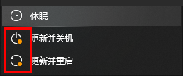
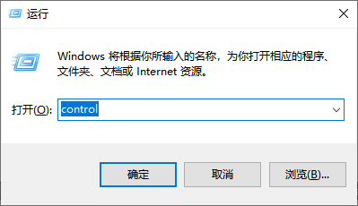
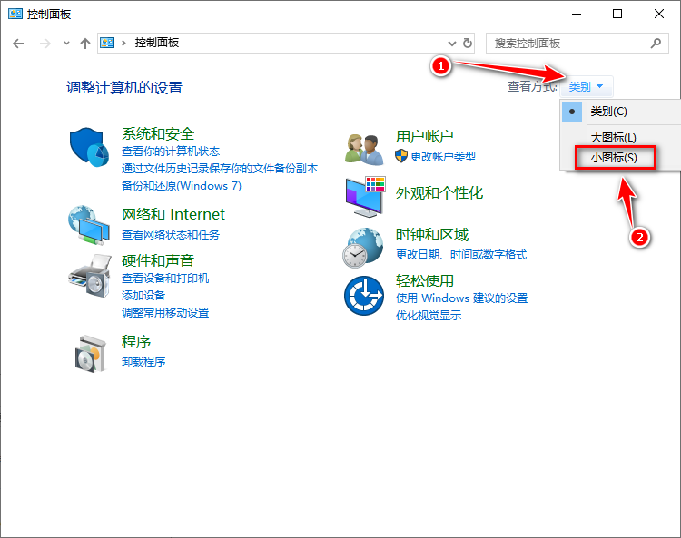
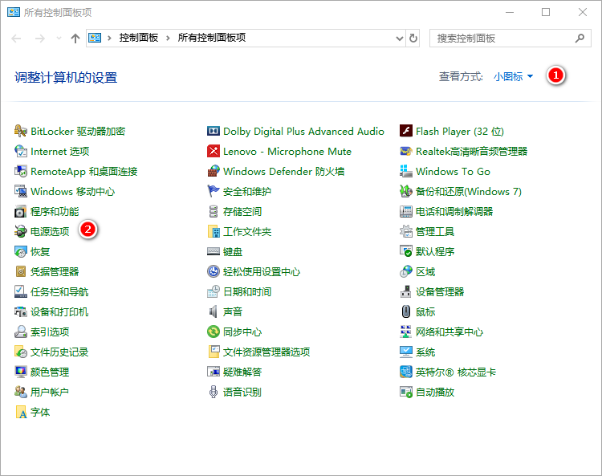
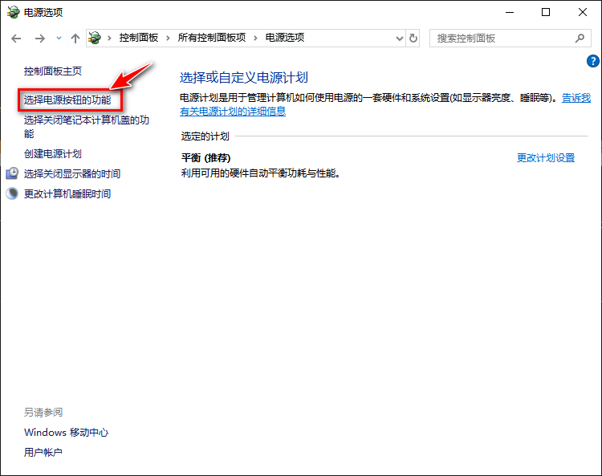
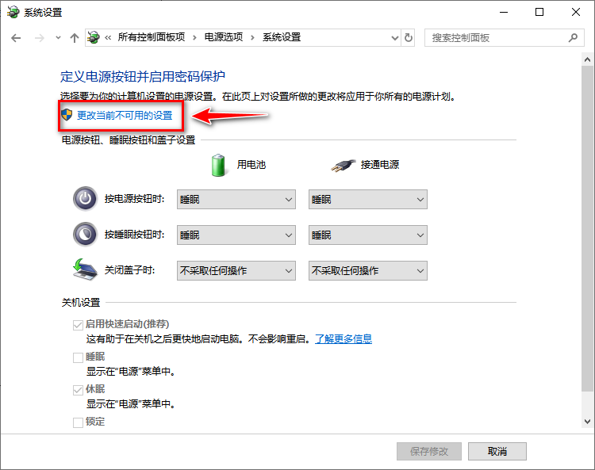
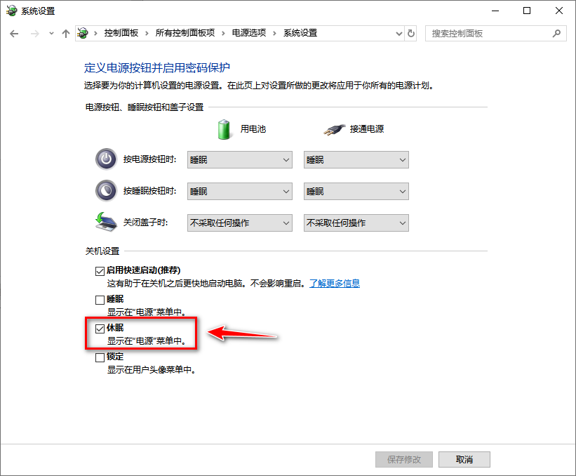

Win10 的强制更新非常让人讨厌，无论如何配置都无法禁用更新。尤其是有时候需要快速关机的时候后，必须要先更新才行。这个时候其实可以启用休眠功能，这样就不需要更新了。
简介

补充一下 =休眠= 和 =睡眠= 的区别：
- 休眠
-
把内存中当前数据全部保存的硬盘上，然后断电，重新开机后再数据重新加载到内存。
- 睡眠
-
可简单的理解为只是关闭显示器和硬盘，内存始终通电。
步骤1
Win+R 代开运行命令窗口，输入 control , 然后点击确定。

步骤2
确定后的窗口如图所示，点击 类别 ，选择 小图标

这样就可以看到电源选项了。如下图

步骤3
出现如下窗口后，点击 选择电源按钮功能

步骤4
出现如下窗口后，点击 更改当前不可用的设置

步骤4
勾选 =休眠= ，然后点击保存修改。
